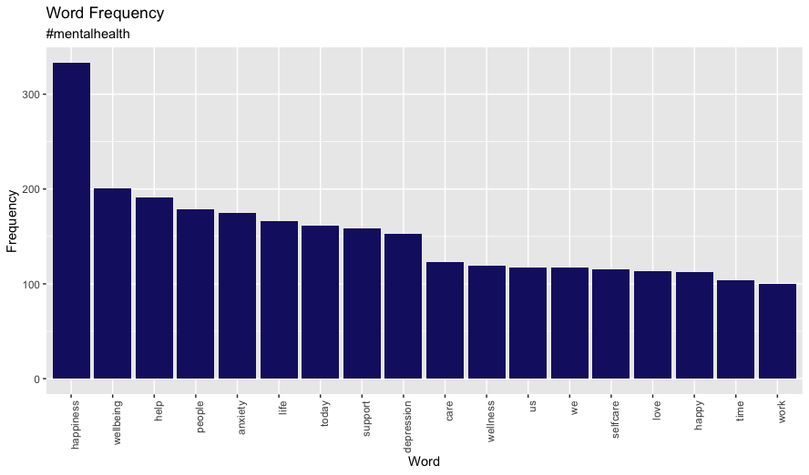

Extracting tweets with R
Social media has emerged as a prominent tool for expressing opinions, sharing news, and engaging in discussions. Twitter, with over 330 million active users worldwide, has become an indispensable tool for businesses, governments, and individuals to promote their messages and campaigns.
Data analysis of Twitter data is becoming increasingly important, as it provides valuable insights into the patterns and trends of Twitter users. Using the R programming language, it is possible to clean and analyze tweet data, and then create visualizations that help to illustrate the patterns and trends that emerge.
In this blog post, I will demonstrate how to use R to extract and clean tweets, create a corpus, and plot the results. By the end you will have a better understanding of how Twitter data analysis can be used for advertising or awareness campaigns on any topic.
The R programming language is a powerful tool for data analysis and visualization and it is especially useful for analyzing Twitter data. Whether you are interested in analysing Twitter data for personal or professional purposes, the techniques I’ll demonstrate here and in the following posts will provide you with a solid foundation for getting started with Twitter data analysis using R.
2. Extract tweets
First off, I’ll use search_tweets to extract a sample of Twitter data. In this example I’ll use tweets containing the hashtag ‘#mentalhealth’. Mental health is becoming an increasingly important issue and there will be lots of tweets with this tag.
I’ll exclude retweets and filter for those in English only.
#get 2000 tweets with the #mentalhealth hashtag
twtr <- search_tweets("#mentalhealth",
n = 1000,
include_rts = FALSE,
lang = "en")3. Clean data and creating a corpus.
Checking the text of the tweets inside our shiny, new data frame reveals that we need to do some tidying of the data.
#check tweet text
tweet_text <- twtr$text
head(tweet_text)There’s a lot of emojis, URLs, punctuation and other stuff going on here.
[1] "Start your day right with a quote from SUGA of BTS \n\n#MindsetApp #Quotes #Motivation #Wellness #Positivity #SelfCare #MentalHealth #Kpop #BTS #SUGA https://t.co/GXglBR7rrk"
[2] "Remember: There is no health without mental health! #MentalHealth is just as important as physical health, and asking for help is a normal part of life. You should never feel like you have to take on the world alone. #NationalFlowerDay #FlowerDay https://t.co/4SEVDf4c4J"
[3] "Everyone either knows someone struggling with their #MentalHealth or they do themselves. \n\nSome things should transcend politics, that’s what @TedLasso is trying to tell us.\n\nI admire anyone who can ask for help. \n https://t.co/Iz32fcP3xa"
[4] "@Iamdepr47974144 Have you talked to anyone about how you feel? #mentalhealth #depression"
[5] "#postivevibes #quotes #peace #innerchild #mentalhealth #love #motto #inspiration #health \n\n Blissful Cleaning LLC https://t.co/VyfA8yE8IU" I’ll use the tm package to help with this but first I can use a simple regular expression. I’ll remove URLs and special characters such as emojis by simply keeping only letters.
# Remove special characters
tweet_text_az <- gsub("[^A-Za-z]", " ", tweet_text)Before I proceed I’ll convert the text I extracted into a corpus so that I can use the tm package for text mining. Creating a corpus is important because it provides a structured way to work with text data and enables more efficient analysis.
And look how easy it is…
# Create a corpus (transform tweets into documents)
tweet_corpus <- tweet_text_az %>%
VectorSource() %>%
Corpus()4. Usage of the tm package for text mining
Now that’s done I’ll use a few tm package functions to do a bit more cleaning.
# Remove stop words, extra whitespace and transform to lower case
tweet_corpus_no_stop <- tm_map(tweet_corpus, removeWords, stopwords("english"))
tweet_corpus_lower <- tm_map(tweet_corpus_no_stop, tolower)
tweet_corpus_docs <- tm_map(tweet_corpus_lower, stripWhitespace)After a quick check of word frequency I’ll remove words that don’t serve a purpose.
# remove custom stops and check frequency again
# 1. remove custom stops
custom_stop <- c('mentalhealth', 'health', 'mental', 's', 'i', 'can', 'amp',
'day', 'the', 'mentalhealthawareness', 't', 'it',
'internationaldayofhappiness', 'will', 'a', 'get', 'you',
'need', 'take', 'new', 'one', 'make', 're', 'for', 'march',
'm', 'if', 'to', 'via', 'don', 'just', 'th', 'may', 'way')
tweet_corpus_cust <- tm_map(tweet_corpus_docs, removeWords, custom_stop)
# 2. check frequency
word_freq_cust <- freq_terms(tweet_corpus_cust, 25)
word_freq_custWhat I’m left with is a list of words I can use to help promote mental health awareness. The end result is not particularly suprising given the subject matter but it serves as a good example of the possibilities of using Twitter data for other campaigns such as brand management.
I’ll quickly put together a bar chart showing word vs freq in ggplot.
# visualise the most popular terms (those with a frequency>100)
word_freq_100 <- subset(word_freq_cust, FREQ >= 100)
ggplot(word_freq_100, aes(x = reorder(WORD, -FREQ), y = FREQ)) +
geom_bar(stat= 'identity', fill = 'midnightblue') +
xlab('Word') +
ylab('Frequency') +
ggtitle('Word Frequency', subtitle = '#mentalhealth') +
theme(
axis.text.x = element_text(angle = 90, hjust = 1)
)
5. Conclusion
In this blog post, I demonstrated how R can be used to extract and clean tweets, create a corpus and analyze Twitter data which potentially offers valuable insights into the behaviour and trends of Twitter users. These insights could prove beneficial for personal or professional purposes, such as advertising or awareness campaigns.
In following posts I’ll take this process further. What awaits is topic modelling, sentiment analysis and social graph visualisations.